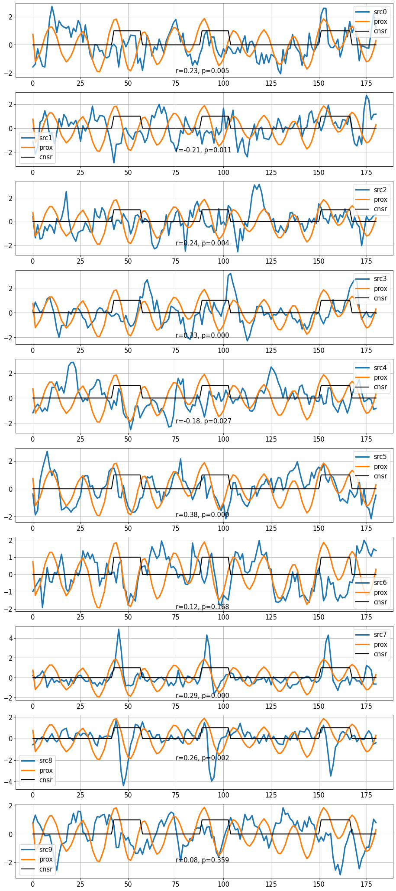
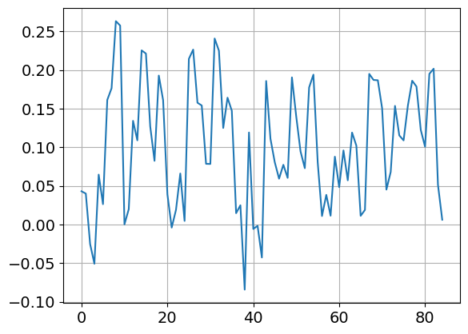
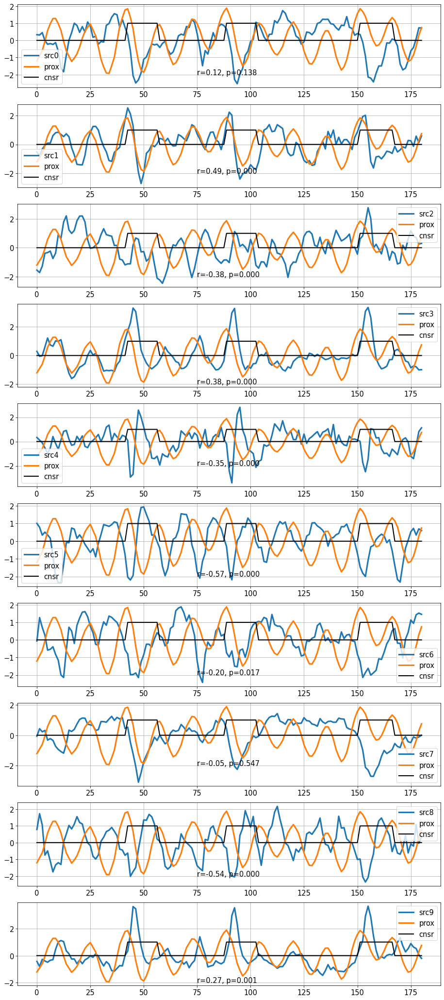

Sep 3, 2023: Emoprox2 dataset: ICA
Contents
Sep 3, 2023: Emoprox2 dataset: ICA¶
import csv
import os
import numpy as np
import pandas as pd
import scipy as sp
import pickle
from sklearn.decomposition import FastICA
from os.path import join as pjoin
from itertools import product
from tqdm import tqdm
from copy import deepcopy
# plotting
import matplotlib as mpl
import matplotlib.pyplot as plt
import seaborn as sns
from mpl_toolkits.mplot3d import Axes3D
from matplotlib.cm import rainbow
plt.rcParamsDefault['font.family'] = "sans-serif"
plt.rcParamsDefault['font.sans-serif'] = "Arial"
plt.rcParams['font.size'] = 14
plt.rcParams["errorbar.capsize"] = 0.5
import cmasher as cmr # CITE ITS PAPER IN YOUR MANUSCRIPT
# ignore user warnings
import warnings
warnings.filterwarnings("ignore", category=UserWarning)
class ARGS(): pass
args = ARGS()
args.SEED = 100
np.random.seed(args.SEED)
emoprox_dir = pjoin(os.environ['HOME'], 'emoprox_inventory_govinda/emoprox_extract_timeseries')
# ROI atlas/parcellation
atlas_df = pd.read_csv(f"{emoprox_dir}/masks/README_MAX_ROIs_final_gm_85.txt", delimiter='\t')
# display(atlas_df)
roi = 'dorsal Insula'
roi_idx = np.where(atlas_df['Hemi'].str.contains('R') * atlas_df['ROI'].str.contains(roi))[0]
display(atlas_df.iloc[roi_idx])
# data
data_df = pd.read_pickle(f"{emoprox_dir}/dataframes/MAX_ROIs.pkl")
data_df['proximity'] = data_df['proximity'].apply(lambda prox: sp.stats.zscore(prox))
| Hemi | ROI | Index | Voxels | File_Name | |
|---|---|---|---|---|---|
| 49 | R | ant. dorsal Insula | 50 | 235 | Hammers-gm-0.5-2mm-AntDorsal-INS-r.nii.gz |
# mean time series across subjects
rids = []
blocks = []
times = []
tss = []
proxs = []
censors = []
for rid, block in list(product(data_df['rid'].unique(), data_df['block'].unique())):
# print(rid, block)
rids.append(rid)
blocks.append(block)
df_ = data_df[data_df['rid'] == rid][data_df['block'] == block]
lmin = np.min(df_['timeseries'].apply(lambda x: x.shape[0]).values)
times.append(df_['time'].iloc[0][:lmin])
tss.append(df_['timeseries'].apply(lambda x: x[:lmin, ...]).mean())
proxs.append(df_['proximity'].apply(lambda x: x[:lmin, ...]).mean())
censors.append(df_['censor'].values[0][:lmin, 0])
df = pd.DataFrame(
data={
'rid': rids,
'block': blocks,
'time': times,
'timeseries': tss,
'proximity': proxs,
'censor':censors,
},
)
df
| rid | block | time | timeseries | proximity | censor | |
|---|---|---|---|---|---|---|
| 0 | 0 | 1 | [0.0, 1.25, 2.5, 3.75, 5.0, 6.25, 7.5, 8.75, 1... | [[-0.02390497788475301, -0.04270538325639377, ... | [-1.2079791745344644, -0.9047940812561361, -0.... | [True, True, True, True, True, True, True, Tru... |
| 1 | 0 | 2 | [212.5, 213.75, 215.0, 216.25, 217.5, 218.75, ... | [[-0.16295314653691623, -0.01666933747741346, ... | [0.017511788254418383, 0.2679718311407305, 0.6... | [True, True, True, True, True, True, True, Tru... |
| 2 | 1 | 1 | [0.0, 1.25, 2.5, 3.75, 5.0, 6.25, 7.5, 8.75, 1... | [[-0.198032265266743, -0.13559650586994343, -0... | [0.13131557794480705, -0.08549816680325, -0.30... | [True, True, True, True, True, True, True, Tru... |
| 3 | 1 | 2 | [211.25, 212.5, 213.75, 215.0, 216.25, 217.5, ... | [[0.15476719317870366, 0.16892929443746676, 0.... | [-0.3047569397545775, -0.08603546353546888, 0.... | [True, True, True, True, True, True, True, Tru... |
| 4 | 2 | 1 | [0.0, 1.25, 2.5, 3.75, 5.0, 6.25, 7.5, 8.75, 1... | [[-0.1134854874655991, -0.13134632084245404, -... | [-0.04327633268643199, -0.3035262893146636, -0... | [True, True, True, True, True, True, True, Tru... |
| 5 | 2 | 2 | [213.75, 215.0, 216.25, 217.5, 218.75, 220.0, ... | [[-0.25074962623687325, -0.02089252445433281, ... | [-0.4111067901733918, -0.5915982171252103, -0.... | [True, True, True, True, True, True, True, Tru... |
| 6 | 3 | 1 | [0.0, 1.25, 2.5, 3.75, 5.0, 6.25, 7.5, 8.75, 1... | [[-0.06581703739227845, -0.15415326977058338, ... | [-0.513334016610507, -0.282239826108365, -0.05... | [True, True, True, True, True, True, True, Tru... |
| 7 | 3 | 2 | [213.75, 215.0, 216.25, 217.5, 218.75, 220.0, ... | [[-0.3144177276600097, 0.06739999981492178, -0... | [-0.8029868682572703, -0.5041406737913097, -0.... | [True, True, True, True, True, True, True, Tru... |
| 8 | 4 | 1 | [0.0, 1.25, 2.5, 3.75, 5.0, 6.25, 7.5, 8.75, 1... | [[-0.2435785864687706, -0.28628994882598463, -... | [0.240098562306032, -0.021445949927976136, -0.... | [True, True, True, True, True, True, True, Tru... |
| 9 | 4 | 2 | [213.75, 215.0, 216.25, 217.5, 218.75, 220.0, ... | [[-0.4302520248277172, -0.18604681879257243, 0... | [0.13384122043478605, -0.05342583016181571, -0... | [True, True, True, True, True, True, True, Tru... |
| 10 | 5 | 1 | [0.0, 1.25, 2.5, 3.75, 5.0, 6.25, 7.5, 8.75, 1... | [[-0.07412262119522706, -0.34206309425704684, ... | [-0.5540378141435072, -0.3305984330997452, -0.... | [True, True, True, True, True, True, True, Tru... |
| 11 | 5 | 2 | [215.0, 216.25, 217.5, 218.75, 220.0, 221.25, ... | [[0.18141126332351015, 0.01966165563471213, 0.... | [-0.20935090960709085, 0.014017930910944906, 0... | [True, True, True, True, True, True, True, Tru... |
spatial ica¶
args.n_comps = 10
ica = FastICA(
n_components=args.n_comps,
whiten='unit-variance',
max_iter=1000,
)
X = df.iloc[0]['timeseries']
t = df.iloc[0]['time']
prox = df.iloc[0]['proximity']
censor = df.iloc[0]['censor']
S = ica.fit_transform(X)
A = ica.mixing_
print(S.shape, A.shape, np.linalg.matrix_rank(A))
X_ = ica.inverse_transform(S)
# np.allclose(X, X_)
(145, 10) (85, 10) 10
R = []; P = []
for i in range(S.shape[1]):
res = sp.stats.pearsonr(S[:, i], prox)
R.append(res.statistic)
P.append(res.pvalue)
R = np.array(R)
P = np.array(P)
fig, axs = plt.subplots(
nrows=args.n_comps, ncols=1,
figsize=(15, 3.5*args.n_comps),
dpi=75
)
# prox_ = deepcopy(prox)
prox_ = np.roll(prox, 1)
for idx in range(args.n_comps):
ax = axs[idx]
ax.plot(t, S[:, idx], linewidth=3, label=f'src{idx}')
ax.plot(t, prox_, linewidth=3, label='prox')
ax.plot(t, 1-censor, linewidth=2, c='k', label='cnsr')
ax.text(75, -2.0, f"r={R[idx]:.2f}, p={P[idx]:.3f}")
ax.legend()
ax.grid(True)

source 7 follows shock onset. source 5 follows proximity stimulus.
plt.plot(A[:, 5])
plt.grid(True)

temporal ica¶
args.n_comps = 10
ica = FastICA(
n_components=args.n_comps,
whiten='unit-variance',
max_iter=1000,
)
X = df.iloc[0]['timeseries']
t = df.iloc[0]['time']
prox = df.iloc[0]['proximity']
censor = df.iloc[0]['censor']
S = ica.fit_transform(X.T)
A = ica.mixing_
print(S.shape, A.shape, np.linalg.matrix_rank(A))
X_ = ica.inverse_transform(S)
# np.allclose(X, X_)
A_ = sp.stats.zscore(A)
(85, 10) (145, 10) 10
R = []; P = []
for i in range(S.shape[1]):
res = sp.stats.pearsonr(A_[:, i], prox)
R.append(res.statistic)
P.append(res.pvalue)
R = np.array(R)
P = np.array(P)
fig, axs = plt.subplots(
nrows=args.n_comps, ncols=1,
figsize=(15, 3.5*args.n_comps),
dpi=75
)
prox_ = deepcopy(prox)
# prox_ = np.roll(prox, 1)
for idx in range(args.n_comps):
ax = axs[idx]
ax.plot(t, A_[:, idx], linewidth=3, label=f'src{idx}')
ax.plot(t, prox_, linewidth=3, label='prox')
ax.plot(t, 1-censor, linewidth=2, c='k', label='cnsr')
ax.text(75, -2.0, f"r={R[idx]:.2f}, p={P[idx]:.3f}")
ax.legend()
ax.grid(True)
